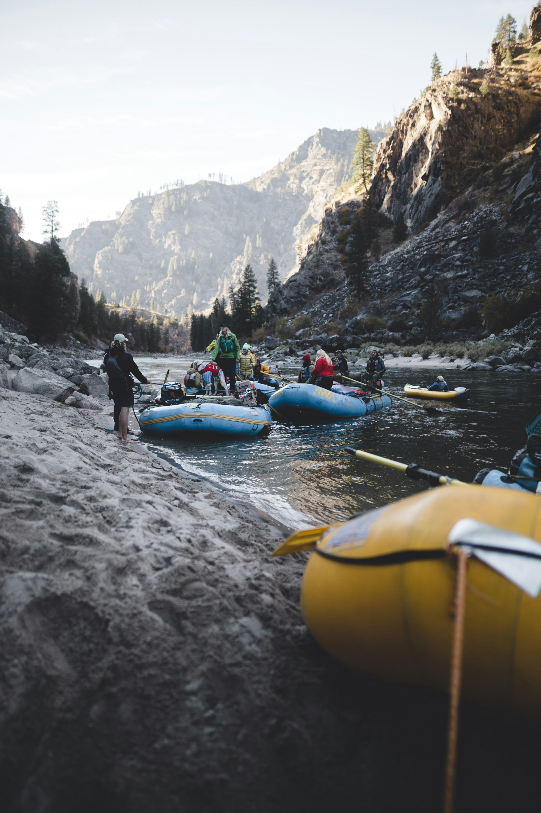

About Us-BigSplash Rafting
At BigSplash Rafting, we bring adventure to life with exciting whitewater rafting experiences along the Middle Fork of the Salmon River. Enjoy breathtaking canyon views, explore beautiful wilderness, and discover the wonders of nature along the way. Whether you're seeking thrilling rapids or peaceful moments by the river, BigSplash Rafting promises unforgettable adventures and memories that last a lifetime.
History
BigSplash Rafting was established September 21, 2026 with a passion for adventure and a vision to share the excitement of whitewater rafting with people from all walks of life. What began as a small dream has grown into a rafting company dedicated to offering memorable experiences along the Middle Fork of the Salmon River. Over the past five years, we have built our reputation around adventure, teamwork, safety, and excellent customer service. We take pride in providing exciting rafting trips, exploring beautiful natural surroundings, and creating unforgettable moments for everyone who joins us. Today, BigSplash Rafting continues to welcome adventure seekers, families, and nature lovers. Our mission is to offer memorable experiences, inspire a love for the outdoors, and make every river journey an adventure worth remembering.